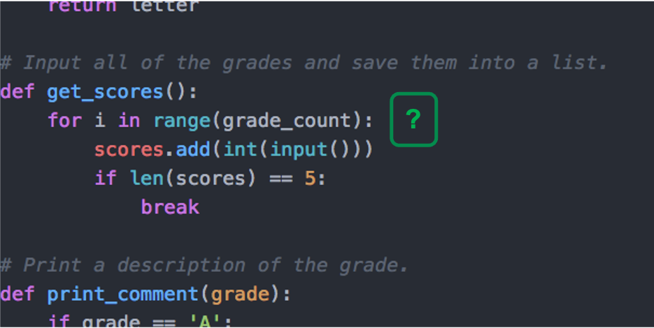
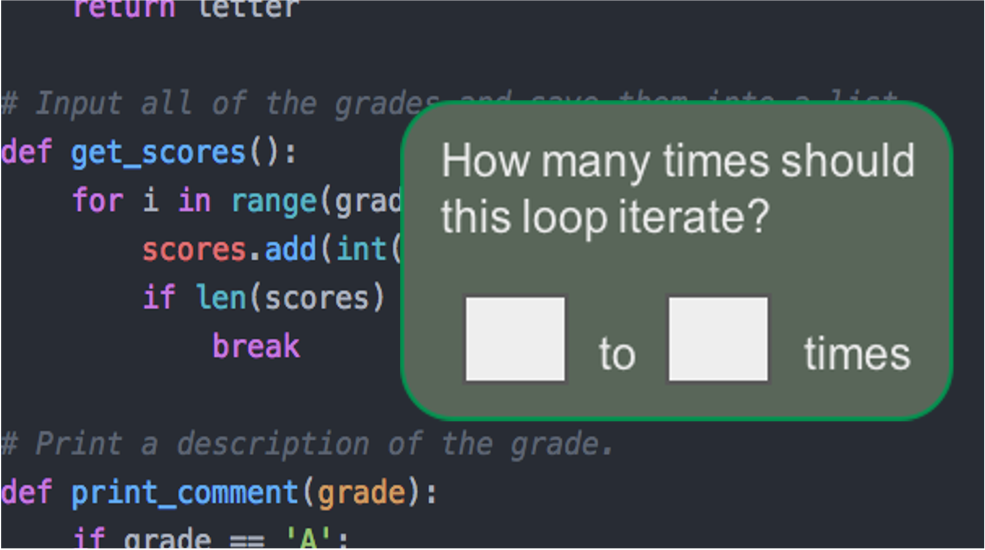
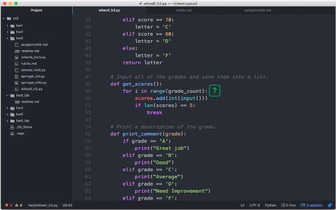

I work on AI + dev tools.

This post is an informal summary of our recent ICSE'21 Education idea paper, "An Inquisitive Code Editor for Addressing Novice Programmers’ Misconceptions of Program Behavior". Check out the preprint for more details. Special thanks to the NSF for funding this work.
Update 2021: This work led to my NSF CAREER proposal (pdf) that greatly expands on the approach.
What if a code editor could detect that you have a potential misunderstanding of your code and help you overcome the misunderstanding? I'll be describing the approach and prototype we've been working on in the context of helping novice programmers learn how to code.
Let's start with this snippet of code based on a student's homework submission:
response = 0
while response != 'y' or response != 'n':
response = input("Please enter (y)es or (n)o. \n")
The program asks the user to input y for yes or n for no, and it will repeat until valid input is given. However, the loop will actually never end because of a mistake. The “or” should instead be an “and”. These types of errors are known as semantic errors. It compiles, but does not behave the way the programmer expects.
Program correctness is particularly challenging for novices because they have a different definition of correctness than professional programmers1. A study reported that students believe their code is correct when there are no more compiler errors2. Due to this flawed definition of correctness, semantic errors persist and take far longer to fix than syntax errors. In fact, semantic errors can take 50x longer for novices to fix3, if they ever fixed at all!
Ultimately, the novice has a misconception about how their program will behave and it takes considerable effort for them to realize they even have a misconception.
While looking into possible solutions, I was inspired by Whyline4. Whyline was Amy Ko’s dissertation project that enables programmers to ask why and why not questions about their program’s output. It provides these features by recording a program execution and using dynamic slicing to map the output in question to the sequence of code that caused the output.
Although Whyline is fantastic for helping experienced programmers in tracking down bugs, it may not help novices with semantic errors since they often aren’t even aware that they have a bug.
The idea that we propose is an inquisitive code editor. Rather than the programmer asking questions, it is the code editor asking the programmer questions.
It works in 4 main steps:
There are a number of existing techniques that we are using to identify these potential semantic errors. For example, there are large datasets of common errors that novices make that we can plug into existing code smell detectors. We can also use static program analysis to find other common issues, such as when code can never be reached, if a loop will never iterate, or if a return value is ignored from a function that doesn't have side effects. We are also training machine learning models to identify more patterns in novice code across several languages.
In the code editor, the tool will annotate potential problems with a question mark. We want to entice the programmer to click it, but not be too disruptive so we are using prior work on negotiable interruptions5 and surprise-explain-reward6.
If the programmer clicks the question mark, the editor shows a question from a predefined set.
For example, a student's code includes a for loop that iterates on a list, but the list is always either empty or has one element. So the tool asks the student to type a range of how many times they believe the loop will iterate.
If they answer more than 1 time, then the tool is confident that it has identified a semantic error and the novice has a misconception.
This is an opportunity to teach the student about how the program will actually behave. The tool can provide an explanation that is generated for the specific scenario and also point them to the relevant code that will need to be changed. Other interventions could be added, such as linking to lecture notes, documentation, or StackOverflow.
Although in some cases the error could be fixed automatically, it will instead only provide support in making the fix, since the goal is for the student to learn.
Not only that, but the tool can also prevent future misconceptions. One study found that particular errors happen repeatedly to students, even in the same coding session3.
Since we have elicited the expected behavior from the programmer, the tool can generate test code in the form of assertions and unit tests, and generate documentation in the form of code comments. That way, if the behavior ever deviates from their expectation again, it will provide a clear signal to the programmer that something is wrong.
Additionally, the tool can monitor issues that reoccur and suggest tutorials or longer explanations about the error. The tool can also produce aggregated reports to the instructor about common issues that the students are having that can be referenced in future lectures or office hours.
There you have it, our proposed idea for an inquisitive code editor to identify, correct, and prevent misconceptions that novices have about their program's behavior.
Currently, we have prototyped these ideas in the form of Atom plugins but have a lot of work to do. There are several grad students that are investigating different pieces, including how to identify potentially problematic code, what questions should be asked, what information should be included in the explanations, and how to minimize false positives and interruptions. We are also looking into how such a system could be adapted for professional programmers (e.g., to get them to document the complex portions of their code).
Stay tuned!
1 Yifat Ben-David Kolikant. 2005. Students' alternative standards for correctness. In Proceedings of the first international workshop on Computing education research (ICER '05). Association for Computing Machinery, New York, NY, USA, 37–43. DOI:https://doi.org/10.1145/1089786.1089790
2 Ioanna Stamouli and Meriel Huggard. 2006. Object oriented programming and program correctness: the students' perspective. In Proceedings of the second international workshop on Computing education research (ICER '06). Association for Computing Machinery, New York, NY, USA, 109–118. DOI:https://doi.org/10.1145/1151588.1151605
3 Amjad Altadmri and Neil C.C. Brown. 2015. 37 Million Compilations: Investigating Novice Programming Mistakes in Large-Scale Student Data. In Proceedings of the 46th ACM Technical Symposium on Computer Science Education (SIGCSE '15). Association for Computing Machinery, New York, NY, USA, 522–527. DOI:https://doi.org/10.1145/2676723.2677258
4 Amy J. Ko and Brad A. Myers. 2008. Debugging reinvented: asking and answering why and why not questions about program behavior. In Proceedings of the 30th international conference on Software engineering (ICSE '08). Association for Computing Machinery, New York, NY, USA, 301–310. DOI:https://doi.org/10.1145/1368088.1368130
5 McFarlane, Daniel C. "Comparison of four primary methods for coordinating the interruption of people in human-computer interaction." Human-Computer Interaction 17.1 (2002): 63-139.
6 Aaron Wilson, Margaret Burnett, Laura Beckwith, Orion Granatir, Ledah Casburn, Curtis Cook, Mike Durham, and Gregg Rothermel. 2003. Harnessing curiosity to increase correctness in end-user programming. In Proceedings of the SIGCHI Conference on Human Factors in Computing Systems (CHI '03). Association for Computing Machinery, New York, NY, USA, 305–312. DOI:https://doi.org/10.1145/642611.642665